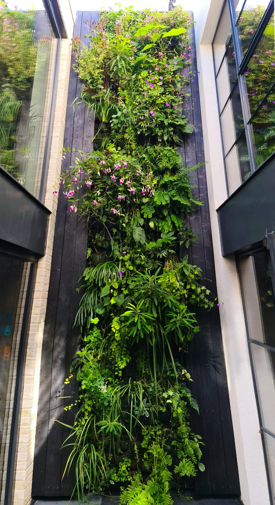

VERTICAL GARDENS • LIVING WALLS
Vertical gardens bring texture, freshness, and vitality to spaces that would otherwise be flat and grey. We design, grow, install, and maintain living walls across the UK — each one nurtured in our Devon nursery and delivered ready to thrive.
In cities, space is scarce. Gardens compete with paving, car parks, and glass. A vertical garden flips the equation, turning unused walls into living ecosystems. They beautify, clean the air, regulate temperature, soften sound, and attract pollinators. They also make people feel better — biophilic design reduces stress and boosts mood.
Many systems force plants to fit the hardware. We do the opposite. We start with the planting plan — light levels, exposure, texture, colour, seasonality — and build the system around it. The result is a tapestry that looks natural and stays healthy.
Every garden is assembled and matured in our Devon nursery. We deliver established planting for immediate impact and minimal disruption on site.
Our proprietary hydroponic approach delivers water and nutrients precisely where they are needed. Optional automation keeps maintenance low and reliability high.
We create more than flat walls. Living spheres, columns, and chandeliers transform greenery into sculpture. These installations become centrepieces for homes, offices, and events.
Explore the portfolio, learn the benefits, or browse our FAQs. When you’re ready, tell us about your space.